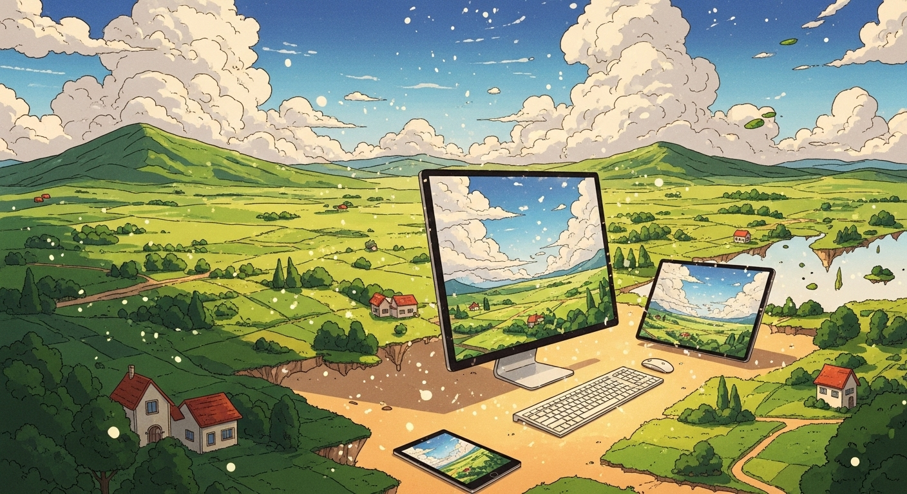
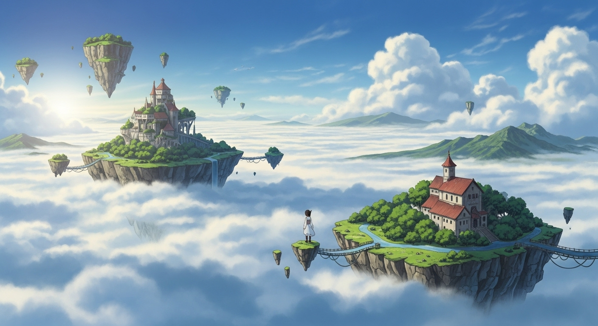
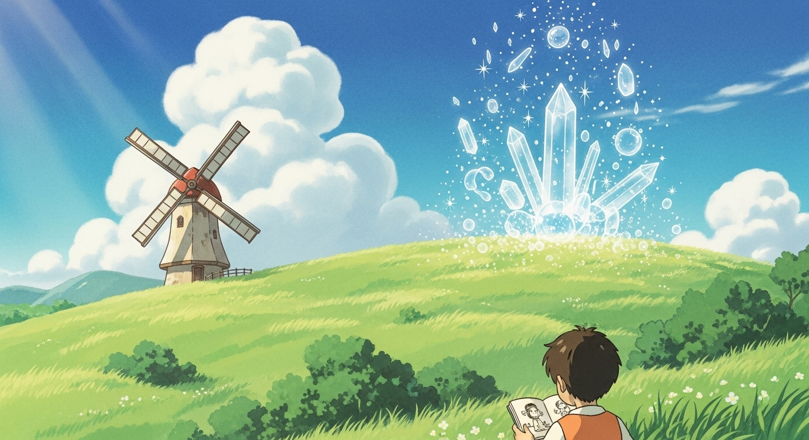
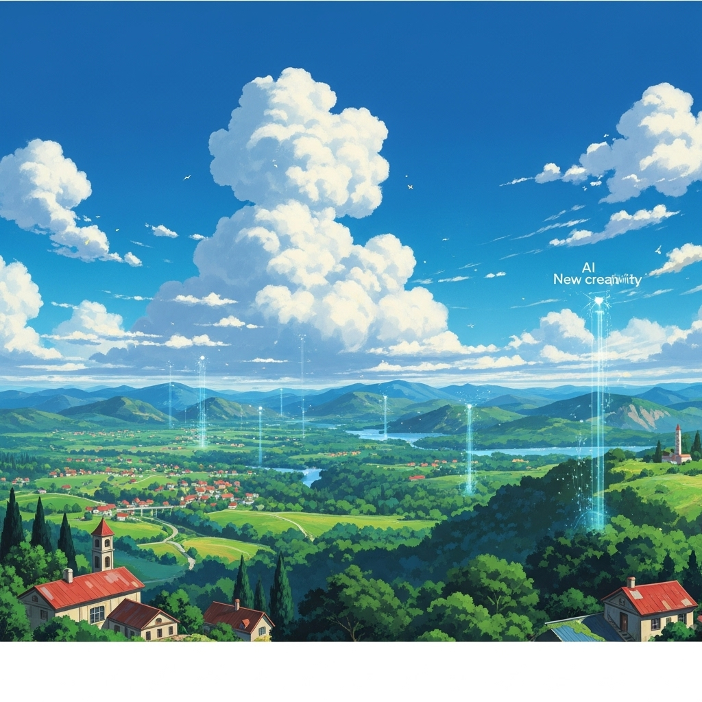
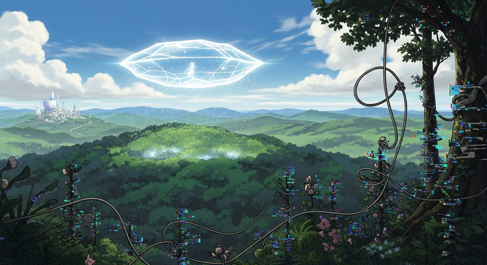
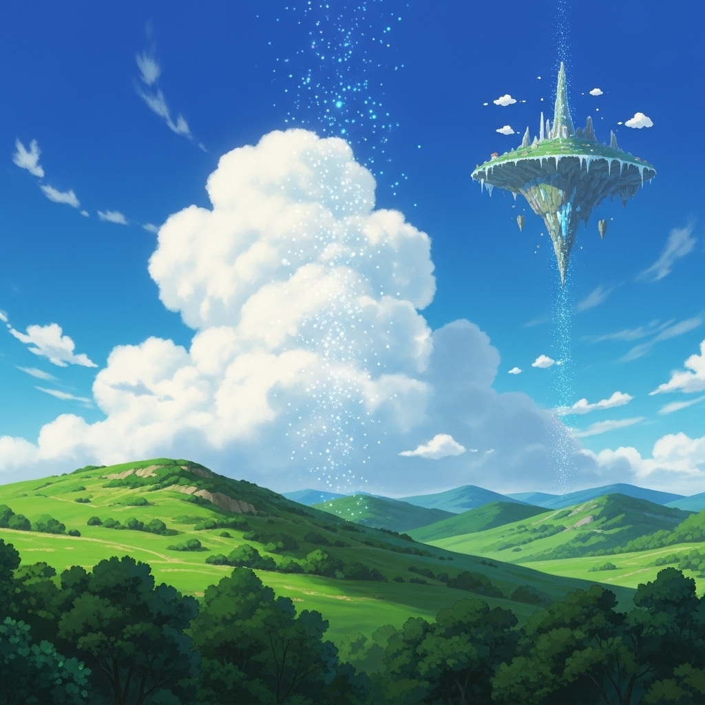
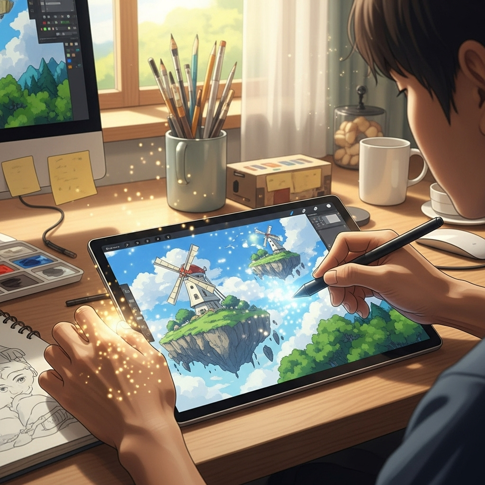
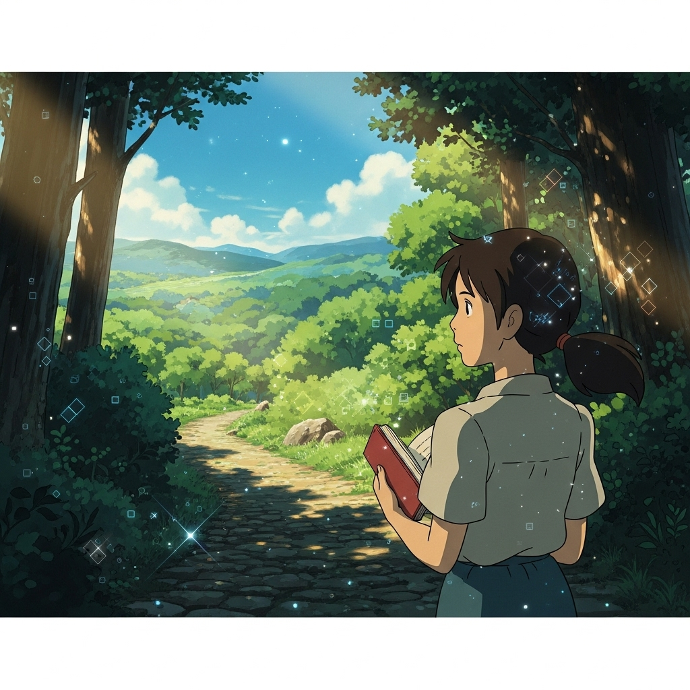

生成AIでジブリ風画像を生成！秘訣と著作権、活用法で創作を加速

導入

デジタル技術の進化は、私たちの想像力を形にする方法を日々塗り替えています。特に近年、目覚ましい発展を遂げている生成AIは、クリエイティブな表現の可能性を無限に広げ、多くの人々に新たな驚きと感動をもたらしています。その中でも、私たちが心惹かれ、懐かしさや温かさを感じる「ジブリ風」の画像をAIが生成できるようになったことは、まさに夢のような出来事と言えるでしょう。
スタジオジブリ作品は、その唯一無二の世界観、息をのむほど美しい背景美術、そして心温まる物語によって、世界中の人々を魅了し続けています。空を舞う城、深い森の神秘、どこか懐かしい日本の田園風景、そしてそこに息づく個性豊かなキャラクターたち。それら全てが、私たちの心の中に深く刻まれ、忘れがたい感動を与えてきました。しかし、そのような緻密で情感豊かな世界観を自らの手で再現することは、高度な画力と膨大な時間を要するため、多くの人にとっては憧れのままでした。
しかし、生成AIの登場により、その状況は一変しました。今や、適切な「呪文」とも言えるプロンプト（指示文）を与えることで、誰でも手軽に、そして驚くほど高品質なジブリ風の画像を生成できるようになっています。これは、まるで魔法使いが杖を振るように、私たちの頭の中に描いていたイメージが、瞬く間に美しいビジュアルとして目の前に現れるかのようです。
本記事では、この魅力的な生成AIを用いたジブリ風画像生成の世界へ、皆さまを優しくご案内いたします。AI技術がもたらす創作の新たな可能性から、ジブリ風画像を生成する具体的なメリットとデメリット、そして数多あるAIツールの中から最適なものを選ぶ方法、さらには実際に画像を生成する際の具体的なステップやプロンプト作成の秘訣まで、詳細に解説していきます。
もちろん、新しい技術には常に、その利用に伴う責任と倫理的な課題が伴います。特に、著作権というデリケートな問題は避けて通れません。本記事では、ジブリ作品の著作権に関する基本的な考え方から、生成AI画像の著作権の現状、そして私たちがどのように倫理的にAIと向き合うべきかについても、しっかりと掘り下げていきます。
そして最後に、生成したジブリ風画像をどのように活用できるのか、具体的な事例を交えながら、皆さまの創作活動や日々の生活に、この新しい技術がどのような彩りをもたらすことができるのかをご紹介します。
この記事を読み終える頃には、皆さまもきっと、生成AIという強力なツールを手に、自分だけのジブリ風世界を創造する冒険へと旅立ちたくなることでしょう。さあ、一緒にこの素晴らしい旅を始めましょう。
生成AIでジブリ風画像を生成する魅力

生成AIがクリエイティブな領域に足を踏み入れたことで、私たちの想像力はかつてないほど自由に羽ばたくことができるようになりました。特に、多くの人々の心に深く刻まれている「ジブリ風」という独特の世界観をAIが再現できるようになったことは、まさに画期的な出来事と言えるでしょう。ここでは、その魅力の核心に迫り、なぜこれほどまでに多くの人々が生成AIによるジブリ風画像生成に惹きつけられるのかを深掘りしていきます。
AI技術がもたらす創作活動の新たな可能性
AI技術の進化は、単なる作業の効率化に留まらず、私たちの創作活動そのものに革命的な変化をもたらしています。かつては、高度な専門知識や技術、そして膨大な時間と労力を要した表現が、今や誰もが手軽に、そして驚くべきクオリティで実現できる時代となりました。これは、まさに創作の民主化と呼べる現象です。
これまでのイラスト制作やデザインの現場では、アイデアを具現化するために、スケッチから始まり、線画、着彩、背景の描き込みといった、いくつもの工程を熟練した技術者が丹念に積み重ねていく必要がありました。しかし、生成AIは、私たちが言葉で表現したイメージを、数秒から数分という驚異的なスピードで、具体的なビジュアルへと変換してくれます。例えば、「夕焼けに染まる古民家と猫が縁側でくつろぐ、幻想的な風景」といった漠然とした指示でも、AIは瞬時にそれらを解釈し、何枚もの異なる構図や色彩の画像を提案してくれるのです。
このスピードと手軽さは、クリエイターにとって計り知れない価値を持ちます。アイデアがひらめいたその瞬間に、それを具体的な形として試すことができるため、思考のプロセスを中断することなく、次々と新しい表現を追求することが可能になります。まるで、自分の頭の中に、常に腕利きのイラストレーターが待機しており、どんな無茶な要望にも応えてくれるような感覚です。
また、AIは、人間が思いもよらないような組み合わせや表現を生み出すこともあります。これは、AIが膨大なデータを学習する過程で、既存の枠にとらわれない独自の「視点」を獲得しているためです。時には、私たちが意図しなかった偶発的な美しさや、新しいインスピレーションの源となる画像が生成されることもあり、それがまた創作の幅を大きく広げてくれます。例えば、特定の画家やアニメーションスタジオのスタイルを学習したAIは、そのスタイルを踏襲しつつも、私たち自身のオリジナルの要素を組み合わせることで、全く新しい表現を生み出すことができるのです。
さらに、AIは、画像生成だけでなく、動画生成、音楽生成、文章生成など、多岐にわたるクリエイティブな分野でその能力を発揮し始めています。これらの技術が相互に連携することで、例えば、ジブリ風の画像に合わせたオリジナルのBGMをAIが生成し、さらにその画像とBGMを基にしたショートストーリーをAIが執筆するといった、複合的なコンテンツ制作も夢ではなくなります。私たちは今、まさに創作活動の新たな地平線に立っていると言えるでしょう。AIは、私たちの創造性を奪うものではなく、むしろそれを増幅させ、これまで手の届かなかった領域へと誘う、強力なパートナーとなり得るのです。
ジブリ風の世界観を手軽に再現できる理由
スタジオジブリ作品が持つ独特の世界観は、多くの人々にとって特別なものです。その温かみのある色彩、緻密に描き込まれた背景、どこか懐かしさを感じる風景、そしてキャラクターたちの情感豊かな表情は、観る者の心に深く響き、忘れがたい感動を与えます。これらの要素が織りなす「ジブリ風」というスタイルは、単なるアニメーションの枠を超え、一つの芸術ジャンルとして確立されていると言っても過言ではありません。
しかし、このジブリ風の世界観を自らの手で再現しようとすれば、それは並大抵のことではありません。熟練のイラストレーターであっても、ジブリ作品特有の空気感や色彩、構図を完璧に捉えるには、長年の修練と深い洞察が必要です。特に、光の表現、水の描写、植物の生命感といった、細部に宿る美しさを再現することは、非常に高い技術が求められます。
ここで、生成AIがその真価を発揮します。生成AIは、膨大な量の画像データを学習することで、それぞれの画像にどのような特徴があるのか、どのような要素が組み合わさって特定のスタイルを形成しているのかを、統計的に理解しています。具体的には、ジブリ作品の画像データを大量に学習させることで、AIは以下のようなジブリ風の特徴を認識し、再現することができるようになります。
- 独特の色彩パレットと光の表現: ジブリ作品は、鮮やかでありながらも落ち着いたトーンの色彩が特徴です。特に、夕暮れ時のオレンジ色の光、木漏れ日のきらめき、雨上がりのしっとりとした空気感など、光と影の表現が非常に豊かです。AIはこれらの色彩パターンや光のグラデーションを学習し、生成する画像に応用します。
- 緻密な背景描写と自然の表現: 広大な自然、古びた建物、生活感のある小物など、ジブリ作品の背景は物語を語る上で不可欠な要素です。AIは、雲の形、木の葉の表現、水の流れ、石垣の質感といった細部まで学習し、それらを組み合わせてリアルでありながらも幻想的な背景を生成します。
- 温かみのあるタッチと手描き感: デジタル化が進む現代においても、ジブリ作品にはどこか手描きのような温かみが残っています。AIは、線画の柔らかさ、水彩画のようなぼかし、筆致のニュアンスなどを学習し、それらを模倣することで、デジタル生成でありながらもアナログ的な温かさを感じさせる画像を生成できます。
- キャラクターと背景の一体感: ジブリ作品では、キャラクターが背景の中に自然に溶け込み、世界観と一体となっています。AIは、キャラクターの配置、構図、そして背景との調和を考慮し、全体として違和感のない絵作りを試みます。
これらの学習を通じて、AIは「ジブリ風」という抽象的な概念を、具体的なビジュアル要素の組み合わせとして理解し、私たちのプロンプトに応じてそれらを再構築することができるのです。もちろん、AIが完全にジブリ作品そのものを作り出すわけではありません。しかし、その雰囲気、色彩、タッチ、構図といったエッセンスを抽出し、新しい画像に適用する能力は、驚くべきものです。
この「手軽さ」は、専門的な絵のスキルがない人でも、自分の頭の中にある「ジブリ風の夢」を形にできるという点で、非常に大きな魅力となります。複雑な描画ソフトウェアの使い方を学ぶ必要もなく、ただ言葉でイメージを伝えるだけで、憧れの世界観が目の前に現れる。これは、多くの人々にとって、創作への敷居を大きく下げ、誰もがアーティストになれる可能性を秘めていると言えるでしょう。ジブリ作品への深い愛と、AI技術への好奇心が融合したとき、私たちの創作の旅は、新たな次元へと誘われるのです。
生成AIでジブリ風画像を生成するメリット

生成AIを使ってジブリ風画像を生成することは、単に面白いだけでなく、クリエイティブな活動において多くの具体的なメリットをもたらします。ここでは、その中でも特に注目すべき３つのメリットについて、詳しく掘り下げていきましょう。これらのメリットは、あなたの創作活動を加速させ、新たな表現の扉を開く手助けとなるはずです。
メリット１．制作時間の短縮と効率化で作業を加速
クリエイティブな作業において、時間と効率は常に重要な課題です。特に、イラスト制作やデザインといった視覚表現の分野では、一つの作品を完成させるまでに、構想、スケッチ、線画、着彩、背景描写、修正といった多くの工程が必要となり、膨大な時間を要することが少なくありません。プロのイラストレーターであっても、一枚の高品質なイラストを仕上げるには、数日から数週間、あるいはそれ以上の期間がかかることもあります。
しかし、生成AIを導入することで、この制作プロセスは劇的に変化します。生成AIは、私たちが言葉で指示した内容を基に、数秒から数分のうちに、高品質な画像を複数枚生成する能力を持っています。例えば、「夕焼け空の下、風車のある丘に立つ少女」というイメージを具体化したい場合、通常であれば、まず構図を考え、スケッチを描き、背景の詳細を描き込み、キャラクターを配置し、色彩を決定するといった一連の作業が必要です。しかし、生成AIを使えば、この一連の作業の大部分を瞬時に完了させることができます。
このスピードは、特に以下のような状況で大きなメリットとなります。
- アイデア出しとコンセプトの可視化: 新しいプロジェクトや物語のアイデアを練る際、頭の中のイメージをすぐにビジュアル化できることは非常に有効です。AIが生成した多様な画像を参考にすることで、より具体的なコンセプトを迅速に固めることができます。例えば、複数のキャラクターデザイン案や、異なる世界観の背景を短時間で試すことができ、効率的に方向性を決定できます。
- 試行錯誤の加速: クリエイティブな作業において、試行錯誤は不可欠です。しかし、手作業での試行錯誤は、時間と労力を消費します。AIを使えば、プロンプトを少し変更するだけで、色合い、構図、タッチなどを瞬時に調整した画像を生成できるため、様々なバリエーションを効率的に試すことができます。これにより、理想のイメージに到達するまでの時間を大幅に短縮できます。
- 初期段階のビジュアル制作: プレゼンテーション資料や企画書に添えるイメージ画像、ウェブサイトのモックアップ、SNS投稿用のアイキャッチ画像など、本格的な制作に入る前の初期段階で必要となるビジュアルを、手軽に、そして迅速に用意することができます。これにより、プロジェクト全体の進行をスムーズにし、関係者間のイメージ共有も容易になります。
- リソースの最適化: 経験の浅いクリエイターや、デザインスキルが不足している個人であっても、プロンプトの工夫次第で高品質な画像を生成できるため、専門のイラストレーターに依頼するコストや時間を削減できます。また、プロのクリエイターにとっても、AIは単調な作業やアイデアの補助として機能し、より高度な創造的思考に集中できる時間を生み出します。
例えば、ある物語の挿絵を考えているとしましょう。手描きであれば、一枚の挿絵に数時間から数日を要するかもしれません。しかし、生成AIを使えば、物語のシーンごとに異なるジブリ風の背景やキャラクターのイメージを、短時間でいくつも生成し、そこから最も適切なものを選ぶことができます。あるいは、生成された画像をベースに、さらに手作業で加筆修正を加え、よりパーソナルなタッチを加えるといったハイブリッドな制作方法も可能です。
このように、生成AIは、クリエイティブなプロセスにおける「時間」という制約を大きく緩和し、私たちのアイデアをより迅速に、そして効率的に形にするための強力なツールとなります。それは、まるで時間に追われることなく、心ゆくまで創作を楽しめる「魔法の筆」を手に入れたかのような感覚をもたらしてくれるでしょう。
メリット２．新しい表現方法の発見とインスピレーション
生成AIは、単に私たちの指示に従って画像を生成するだけでなく、時には私たちの想像力を超えるような、新しい表現方法や視点を提供してくれることがあります。これは、AIが学習した膨大なデータの中から、人間が意識しないようなパターンや組み合わせを見つけ出し、それを新たな形で表現する能力を持っているためです。この予期せぬ発見こそが、クリエイティブなインスピレーションの源となり、私たちの創作活動をより豊かに、そして刺激的なものへと導きます。
例えば、私たちは「ジブリ風」という漠然としたイメージを持っていても、具体的にどのような色彩、構図、テクスチャがそのスタイルを構成しているのかを全て言語化することは困難です。しかし、AIはジブリ作品の画像を学習する過程で、その独特の空気感やエッセンスを多角的に分析し、再現することができます。私たちがプロンプトで「森の奥深くにある秘密の湖」と入力した際、AIは、単に湖と森を描くだけでなく、木漏れ日の差し込み方、水面の揺らめき、周囲に生い茂る植物のディテール、そして全体を包む神秘的な霧の表現など、ジブリ作品によく見られる要素を組み合わせて、私たちの想像を超えるような美しい画像を生成してくれることがあります。
このようなAIによる生成画像は、私たち自身のクリエイティブな思考を刺激します。
- 新しい視点と構図の発見: AIは、人間が固定観念にとらわれがちな構図やアングルとは異なる、斬新な視点から画像を生成することがあります。例えば、普段なら描かないようなローアングルや、意図しない被写体との組み合わせなど、予期せぬ発見が、私たち自身の作品に新しい息吹を吹き込むきっかけとなるでしょう。
- 色彩と光の実験: AIは、私たちが指定したキーワードから、多様な色彩パレットや光の表現を試してくれます。例えば、「夕焼け」と指定しても、燃えるような赤色から、淡いピンクや紫色のグラデーションまで、様々なトーンの夕焼け空を生成します。これにより、これまで試したことのない色の組み合わせや、光の表現方法に挑戦する勇気を与えてくれるかもしれません。
- 既存の概念の再解釈: ジブリ風というスタイルを基盤としつつも、AIは、そこに異なる要素を融合させることで、全く新しいジャンルの表現を生み出すことがあります。例えば、「サイバーパンクな都市のジブリ風風景」といった、一見相容れないコンセプトを組み合わせることで、ユニークで魅力的なビジュアルが生まれる可能性も秘めています。このような試みは、私たちの固定観念を打ち破り、クリエイティブな思考を柔軟にする効果があります。
- 物語の着想: 生成された一枚の画像が、新たな物語の始まりとなることもあります。例えば、AIが生成した、古びた洋館のジブリ風イラストを見たとき、「この館にはどんな秘密が隠されているのだろう？」「どんな人々がここで暮らしていたのだろう？」と、想像力が掻き立てられ、そこから新たなキャラクターやストーリーが生まれるかもしれません。画像は、単なるビジュアル情報としてだけでなく、物語の種としても機能するのです。
生成AIは、私たちクリエイターにとって、まるで「思考の壁打ち相手」のような存在です。自分のアイデアをAIに投げかけ、返ってきた画像から新たなヒントを得て、さらにアイデアを深めていく。この対話的なプロセスこそが、新しい表現方法の発見へと繋がり、私たちのインスピレーションを無限に刺激してくれるのです。それは、創造の喜びをより深く、より広範囲に体験できる、まさに魔法のような体験と言えるでしょう。
メリット３．独自の作品でSNSエンゲージメント向上
現代において、SNSは自己表現の場であり、自身のクリエイティブな作品を発表し、多くの人々と共有するための強力なプラットフォームとなっています。目を引く魅力的なコンテンツは、フォロワーの獲得やエンゲージメントの向上に直結し、時には新たなチャンスへと繋がることもあります。生成AIを活用してジブリ風画像を制作することは、このSNSでの影響力を高める上で非常に大きなメリットをもたらします。
スタジオジブリ作品は、世界中で絶大な人気と認知度を誇り、多くの人々に愛されています。その独特の世界観や温かい雰囲気は、見ているだけで心が和み、癒されるような魅力があります。そのため、「ジブリ風」というキーワードは、SNS上でも非常に高い関心を集める傾向にあります。生成AIを使って、このジブリ風のスタイルを自分のアイデアやオリジナルのキャラクター、あるいは身近な風景に適用することで、以下のような形でSNSエンゲージメントの向上が期待できます。
- 視覚的な魅力と共感の喚起: ジブリ風の画像は、その美しい色彩、緻密な描写、そしてどこか懐かしさを感じる雰囲気によって、見る人の目を引きつけ、強い共感を呼び起こします。多くの人々がジブリ作品に良い思い出や感情を抱いているため、自分の作品がジブリ風であるというだけで、親近感や好意を持ってもらいやすくなります。これは、単に美しい画像を投稿する以上の、感情的なつながりを生み出す力を持っています。
- 拡散性の高さ: ジブリ風のユニークな画像は、SNS上で「いいね」や「シェア」をされやすい傾向にあります。特に、自分の身近な場所や、誰もが知っているキャラクターをジブリ風に変換した画像などは、「面白い」「すごい」といったポジティブな反応を引き出しやすく、瞬く間に多くの人々の目に触れる機会が増えます。これにより、自身の作品やアカウントの認知度が飛躍的に向上する可能性があります。
- コミュニティ形成の促進: ジブリ作品のファンは非常に多く、SNS上には専用のコミュニティも存在します。生成AIでジブリ風画像を投稿することで、そうしたファン層との接点が生まれ、共通の話題を通じて交流が深まる可能性があります。他のクリエイターとのコラボレーションや、フォロワーからの具体的なフィードバックを得る機会も増え、より活発なコミュニティを形成するきっかけとなるでしょう。
- オリジナリティの追求とブランド構築: 生成AIは、単に既存のスタイルを模倣するだけでなく、そこに自分自身のアイデアや個性を加えることで、唯一無二の作品を生み出すことができます。例えば、自分のペットをジブリ風のキャラクターとして描いたり、地元の風景をジブリ映画のワンシーンのように表現したりすることで、他の人にはない独自のコンテンツを提供できます。これにより、「ジブリ風の〇〇を描く人」として、自分自身のクリエイティブなブランドを確立し、フォロワーからの期待感を高めることにも繋がります。
- 投稿頻度の向上と継続的な発信: 前述の通り、AIによる画像生成は非常にスピーディーです。これにより、手作業では難しかった高頻度での投稿が可能となり、常に新鮮なコンテンツをフォロワーに提供し続けることができます。SNSのアルゴリズムは、定期的な投稿を高く評価する傾向があるため、これはエンゲージメント維持においても重要な要素となります。
例えば、あなたがカフェを経営しているとして、そのカフェの風景をジブリ風に描いた画像をSNSで投稿したとしましょう。「まるでジブリの世界に入り込んだみたい！」というコメントと共に、多くの「いいね」やシェアがつき、結果として来店客の増加に繋がるかもしれません。あるいは、個人で物語を創作している方が、その物語のシーンをジブリ風のイラストで表現し、連載形式で投稿することで、読者の想像力を刺激し、物語への没入感を高めることができるでしょう。
このように、生成AIによるジブリ風画像生成は、SNSという現代の表現舞台において、あなたの作品を際立たせ、多くの人々の心に響く強力な武器となり得ます。それは、あなたの創作活動をより広く、より深く、そしてより楽しく展開するための、素晴らしい機会となるはずです。
生成AIでジブリ風画像を生成するデメリット

生成AIがもたらすクリエイティブな可能性は計り知れませんが、その一方で、利用する上で認識しておくべきデメリットや課題も存在します。特に、ジブリ風の画像を生成する際には、特定のスタイルを模倣する特性から、いくつかの注意点が生じます。ここでは、生成AIでジブリ風画像を生成する際に直面しうるデメリットについて、しっかりと理解を深めていきましょう。
デメリット１．意図通りの画像生成が難しい場合がある
生成AIは、私たちの指示（プロンプト）に基づいて画像を生成する強力なツールですが、常に私たちの意図を完璧に汲み取ってくれるわけではありません。特に、ジブリ風という特定のスタイルや、細かなニュアンスを再現しようとすると、思い通りの画像を生成することが難しい場面に直面することがあります。これは、AIの仕組みと、人間が持つ曖昧なイメージとの間に存在するギャップに起因します。
AIは、言葉や学習データに基づいて画像を生成しますが、人間が持つ「ジブリ風」という感覚は、単なる要素の羅列ではなく、色彩、光、構図、キャラクターの表情、背景のディテール、そしてそこに宿る物語性や感情といった、非常に複雑で多層的な要素が絡み合って形成されています。例えば、「トトロが森の中で寝ている絵」と指示しても、AIは様々な解釈をします。トトロの表情は？寝ている場所はどんな森？時間帯は？光の加減は？といった具体的なイメージがプロンプトに含まれていなければ、AIは一般的な「トトロ」と「森」のイメージから画像を生成するため、必ずしも私たちの頭の中で描いていた「あのジブリのトトロ」や「あの森の雰囲気」とは異なる結果になることがあります。
具体的には、以下のような点で「意図通り」が難しいと感じることがあります。
- プロンプトの限界: AIは、私たちが入力するプロンプトの言葉に大きく依存します。しかし、言葉だけで複雑な視覚イメージや感情、微妙なニュアンスを完全に表現することは非常に困難です。「感動的な夕焼け」と入力しても、AIが生成する「感動的」は、私たち個人の「感動的」とは異なるかもしれません。特に、ジブリ作品が持つ独特の「空気感」や「情緒」といった抽象的な要素をプロンプトで的確に伝えるのは、かなりのスキルと経験が必要です。
- AIの解釈の差異: 同じプロンプトを入力しても、AIモデルやその学習データ、あるいはランダムシードの違いによって、生成される画像は毎回異なります。時には、全く意図しない要素が混じり込んだり、構図が崩れていたり、キャラクターの表情が不自然だったりすることもあります。特に、特定のキャラクターや複雑なポーズ、複数の要素が絡み合うシーンを正確に再現しようとすると、何度も試行錯誤を繰り返す必要が出てきます。
- 細部のコントロールの難しさ: 生成AIは、全体の雰囲気やスタイルを再現することには長けていますが、特定の細部（例：キャラクターの目の形、特定の植物の種類、特定の建物の窓の配置）をピンポイントでコントロールすることは、現時点では難しい場合があります。例えば、「〇〇のような窓があるジブリ風の家」と指示しても、AIがその「〇〇のような窓」を正確に理解し、再現できるとは限りません。
- 試行錯誤の繰り返し: 理想の画像を生成するためには、プロンプトの言葉遣いを細かく調整したり、ネガティブプロンプト（生成してほしくない要素を指定する指示）を活用したり、生成設定（スタイル、解像度など）を変更したりと、何度も試行錯誤を繰り返す必要があります。このプロセスは、時には時間と根気を要し、期待通りの結果が得られないとフラストレーションを感じることもあるでしょう。
しかし、これは生成AIの限界というよりも、その特性を理解し、いかに効果的にコミュニケーションを取るかという課題でもあります。意図通りの画像を生成するためには、プロンプト作成のスキルを磨き、AIがどのように画像を解釈し、生成するのかを学ぶ必要があります。また、完璧な画像を一度で生成しようとせず、AIが生成した画像を基に、さらに手作業で修正を加えたり、別のAIツールで加工したりといった、柔軟な発想を持つことも重要です。生成AIは万能の画家ではなく、私たちのアイデアを形にするための強力な「アシスタント」と捉えることで、このデメリットを乗り越え、より効果的に活用することができるでしょう。
デメリット２．AIツールの学習コストと利用料金
生成AIツールを活用してジブリ風画像を生成することは、多くのメリットをもたらしますが、その一方で、初期の学習コストや継続的な利用料金といった経済的な側面も考慮する必要があります。これらのコストは、ツールや利用方法によって大きく異なりますが、事前に理解しておくことで、より賢く、そして効率的にAIツールを使いこなすことができるでしょう。
まず、学習コストについてです。生成AIツールは、単にボタンを押せば理想の画像が出てくる魔法の箱ではありません。それぞれのツールには独特の操作方法、プロンプトの書き方、そして機能や設定が存在します。これらを習得し、自分の意図通りの画像を生成できるようになるまでには、ある程度の時間と努力が必要です。
- プロンプトエンジニアリングの習得: 生成AIの核心は「プロンプト」にあります。どのような言葉を選び、どのような順序で配置し、どのような詳細を記述するかによって、生成される画像の品質や方向性は大きく変わります。特に、ジブリ風という特定のスタイルを再現するには、ジブリ作品特有の色彩、構図、光の表現、キャラクターの描写などを言語化するスキル、すなわち「プロンプトエンジニアリング」を磨く必要があります。これは、多くの試行錯誤と学習を伴うプロセスです。
- ツールの操作方法の習得: Midjourney、Stable Diffusion、DALL-E3など、主要なAIツールはそれぞれ異なるインターフェースやコマンド体系を持っています。基本的な画像の生成方法だけでなく、アスペクト比の調整、スタイル指定、ネガティブプロンプトの利用、バリエーション生成、アップスケールといった高度な機能まで使いこなせるようになるには、それぞれのツールのドキュメントを読んだり、チュートリアル動画を視聴したり、実際に手を動かして試したりする時間が必要です。
- 技術的な知識の習得（Stable Diffusionなど）: 特にStable Diffusionのように、ローカル環境で動作させるタイプのツールでは、PCのスペック要件、Pythonの環境構築、モデルのダウンロードと管理、Web UIの操作など、ある程度の技術的な知識が求められる場合があります。これらは、初心者にとっては敷居が高く感じられるかもしれません。
次に、利用料金についてです。多くの高性能な生成AIツールは、無料プランを提供している場合もありますが、本格的に利用しようとすると、有料プランへの加入が必要となることがほとんどです。
- サブスクリプションモデル: MidjourneyやDALL-E3などの商用サービスは、月額または年額のサブスクリプションモデルを採用していることが多いです。料金プランは、生成できる画像の枚数や処理速度、利用できる機能の範囲によって異なります。例えば、月額10ドル程度のプランから、数十ドル、数百ドルと、用途に応じた様々なプランが用意されています。
- クレジット制: 一部のツールでは、画像を生成するごとに「クレジット」を消費するシステムを採用しています。クレジットは購入することができ、生成する画像の複雑さや解像度によって消費量が異なります。
- ローカル環境でのコスト: Stable Diffusionのように、自身のPCで動作させるオープンソースのツールは、直接的な利用料金はかかりませんが、高性能なGPUを搭載したPCが必要となるため、初期投資として高額なPCを購入する必要がある場合があります。また、電気代や、モデルをダウンロードするためのストレージ容量なども間接的なコストとして考慮する必要があります。
- 将来的なコスト変動: AI技術は急速に進化しており、それに伴いツールの料金体系や提供される機能も変化する可能性があります。現在の料金が将来も維持されるとは限らないため、継続的な情報収集が重要です。
これらの学習コストと利用料金は、AIツールを導入する上での障壁となる可能性があります。しかし、これらの投資は、制作時間の短縮、新しい表現の発見、そしてSNSエンゲージメントの向上といった前述のメリットを享受するための必要経費と捉えることもできます。
賢い利用方法としては、まず無料プランや無料トライアルでツールの操作性や自分との相性を確認し、本当に必要だと感じた場合に有料プランへの移行を検討することです。また、オンラインコミュニティやフォーラムを活用して、プロンプトのヒントやツールの使い方を学ぶことで、学習コストを抑えることも可能です。生成AIは強力なツールであるからこそ、その特性とコストを十分に理解し、自身の目的や予算に合わせて最適な選択をすることが求められます。
デメリット３．オリジナリティの確保が難しい可能性
生成AIを使ってジブリ風画像を生成する際、多くの人が直面しうる、そして最も深く考えるべきデメリットの一つが、「オリジナリティの確保が難しい可能性」という点です。AIは既存のデータを学習し、そのパターンを組み合わせて新しいものを生み出すため、完全にゼロから独創的なアイデアを創出するのとは性質が異なります。特に、特定のスタイルである「ジブリ風」を再現しようとする場合、その課題はより顕著になります。
ジブリ作品は、宮崎駿監督をはじめとするクリエイターたちの、唯一無二の感性、哲学、そして長年の経験と技術の結晶です。彼らの作品には、単なる絵の美しさだけでなく、深いメッセージ性、キャラクターへの愛情、そして作品全体を貫く揺るぎないテーマが込められています。これらは、AIが単に画像を生成するだけでは再現しきれない、人間ならではの「魂」や「個性」といった要素です。
AIが生成するジブリ風画像は、確かにジブリ作品の視覚的な特徴（色彩、タッチ、構図など）を巧みに模倣し、それらしい雰囲気を作り出すことができます。しかし、その結果として、以下のような問題が生じることがあります。
- 「ジブリ風」の枠からの脱却の難しさ: AIは、学習したジブリ作品のパターンに強く影響されるため、そこから大きく逸脱した、本当に独創的な「新しいジブリ風」を生み出すことは難しい場合があります。生成される画像が、どこかで見たことのあるような、既視感のあるものになりがちで、真に斬新なアイデアや表現に到達しにくいという側面があります。
- 個性の希薄化: 誰でも手軽にジブリ風画像を生成できるようになるということは、それだけ多くの「ジブリ風」画像が世の中に溢れることを意味します。その中で、自分自身の作品が埋もれてしまわないように、どうやって個性を際立たせるかが課題となります。単に「ジブリ風」であるだけでは、人々の記憶に残るような強いインパクトを与えることが難しくなるかもしれません。
- 「借り物」感の払拭: AIが生成した画像は、その美しさや完成度の高さゆえに、一見するとプロの作品のように見えます。しかし、それがAIによって生成されたものであり、特定のスタイルを模倣しているという事実を知ったとき、一部の人々は「借り物の美しさ」と感じ、真のオリジナリティや深みを感じない可能性があります。特に、ジブリ作品への深い愛を持つ人々からは、表層的な模倣と受け取られてしまうリスクも考えられます。
- 創造性の停滞: AIに依存しすぎると、自分自身の創造性が刺激されにくくなる可能性があります。自分で絵を描いたり、アイデアを練ったりするプロセスで得られる試行錯誤や発見の喜びが失われ、結果としてクリエイターとしての成長が停滞してしまう恐れも否定できません。
では、このデメリットをどのように乗り越えれば良いのでしょうか。それは、AIを「補助ツール」として捉え、自分自身のオリジナリティを追求する意識を強く持つことです。
- AIをインスピレーションの源として活用: AIが生成した画像をそのまま使うのではなく、それを新たなアイデアの出発点や、自分自身の創作活動のヒントとして活用します。生成された画像からインスピレーションを得て、それを自分自身のタッチや解釈で再構築することで、真のオリジナリティが生まれます。
- 独自の要素の融合: ジブリ風のスタイルを基盤としつつも、そこに自分自身の個性的なアイデア、独自のキャラクター、特定のテーマ、あるいは他のアートスタイルを融合させることで、唯一無二の作品を生み出すことができます。例えば、自分の故郷の風景をジブリ風に描いたり、自分の好きなSF要素をジブリ風にアレンジしたりといった試みです。
- 手作業による加筆修正: AIが生成した画像をそのまま完成品とするのではなく、デジタルペイントソフトなどで手作業による加筆修正を加えることで、自分自身のタッチや感情を作品に吹き込むことができます。これにより、AIが生成した画像に「人間の手」による温かみと個性を加えることが可能です。
- 物語性やメッセージの付与: 画像の背後にある物語やメッセージを深掘りすることで、単なるビジュアル以上の価値を作品に与えることができます。なぜこの絵を描いたのか、何を伝えたいのか、といったクリエイター自身の思想が込められた作品は、AIが生成するだけでは到達できない深みを持つでしょう。
生成AIは、私たちの創作活動を加速させる強力なツールですが、真のオリジナリティは、AIの力を借りつつも、最終的にはクリエイター自身の内面から生まれるものです。AIを賢く使いこなし、自分自身の創造性を最大限に引き出すことこそが、このデメリットを乗り越え、唯一無二の作品を生み出す鍵となるでしょう。
ジブリ風画像を生成できるAIツールの選び方

生成AIツールは日々進化し、その種類も増え続けています。ジブリ風画像を生成する目的でAIツールを選ぶ際には、それぞれのツールの特徴を理解し、自分の目的やスキルレベルに合ったものを選ぶことが重要です。ここでは、特に人気の高い３つのAIツール、「Midjourney」「Stable Diffusion」「DALL-E3」に焦点を当て、それぞれの特徴とジブリ風画像生成との相性について詳しく見ていきましょう。
選び方１．Midjourneyの特徴とジブリ風画像との相性
Midjourney（ミッドジャーニー）は、現在最も注目されている画像生成AIの一つであり、その芸術性の高さと、まるでプロのアーティストが描いたかのような美しい画像を生成する能力で、世界中のクリエイターやAIアート愛好家を魅了しています。特に、アニメーションスタイルや幻想的な風景の生成において、非常に高い評価を得ており、ジブリ風画像の生成においても優れた相性を示します。
Midjourneyの主な特徴
- 卓越した芸術性と美的センス: Midjourneyは、その名の通り「旅」をテーマにした幻想的で芸術性の高い画像を生成することに特化しています。他のAIツールと比較しても、色彩の豊かさ、光の表現、構図の美しさにおいて一日の長があり、まるでアート作品のような仕上がりになります。この美的センスの高さが、ジブリ作品が持つ独特の温かみや神秘的な雰囲気を再現する上で非常に有利に働きます。
- 直感的なプロンプト入力とDiscordベースの操作: Midjourneyは、チャットツールDiscordのサーバー上で動作します。ユーザーはDiscordのテキストチャンネルにプロンプトを入力するだけで画像を生成でき、非常に直感的に操作できます。複雑な設定をすることなく、簡単な指示でも美しい画像を生成できるため、初心者でも比較的早く高品質な結果を得やすいのが特徴です。
- 多様なスタイルオプション: バージョンアップを重ねるごとに、Midjourneyは様々なスタイルオプションやパラメータを追加しています。例えば、異なるバージョン（V5, V6など）を選ぶことで、生成される画像のタッチやリアリティの度合いを調整できます。また、`--style raw`のようなパラメータを使用することで、よりプロンプトに忠実な、加工の少ない画像を生成することも可能です。これらのオプションを組み合わせることで、より細かくジブリ風のニュアンスを調整できます。
- 活発なコミュニティと情報共有: Discordサーバー内には、世界中のMidjourneyユーザーが集まる活発なコミュニティが存在します。他のユーザーがどのようなプロンプトを使って画像を生成しているのかをリアルタイムで見ることができ、自身のプロンプト作成の参考にしたり、アイデアのインスピレーションを得たりすることができます。これは、学習プロセスを加速させる上で非常に大きなメリットです。
ジブリ風画像との相性
Midjourneyは、ジブリ風画像を生成する上で非常に高い相性を持っています。その理由は以下の通りです。
- 幻想的な風景描写の得意さ: ジブリ作品の魅力の一つは、息をのむほど美しい自然や、どこか懐かしい幻想的な風景です。Midjourneyは、雲、水、森、光といった自然の要素を非常に情感豊かに描写する能力に優れており、ジブリ作品特有の空気感を再現するのに適しています。例えば、「A serene forest with a hidden waterfall, bathed in soft morning light, Studio Ghibli style」といったプロンプトで、期待以上の美しい風景を生成してくれるでしょう。
- 色彩と光の表現: ジブリ作品は、繊細な色彩と、時間帯や天候によって変化する光の表現が特徴です。Midjourneyは、この色彩のグラデーションや、木漏れ日、夕焼けの光、雨上がりのしっとりとした空気感など、光と影の描写が非常に得意です。これにより、ジブリ作品が持つ温かみや神秘性を画像に吹き込むことができます。
- アニメーションタッチの再現: Midjourneyは、リアルな写真のような画像だけでなく、イラストレーションやアニメーションのようなタッチの画像を生成することにも長けています。特に、`--style raw`や特定のプロンプトの組み合わせを用いることで、手描き感のある、ジブリ作品に似たアニメーションタッチの画像を生成することが可能です。
- キャラクターと背景の調和: ジブリ作品では、キャラクターが背景の中に自然に溶け込み、世界観と一体となっています。Midjourneyは、プロンプトの工夫次第で、キャラクターと背景が違和感なく調和した画像を生成する能力も持っています。
注意点
Midjourneyは有料のサービスであり、無料トライアルは非常に限られているか、時期によっては提供されていない場合があります。また、Discordの操作に慣れていない方にとっては、最初は少し戸惑うかもしれません。しかし、その美的センスと生成能力は、ジブリ風画像を追求する上で非常に強力な味方となるでしょう。芸術性の高いジブリ風画像を効率的に生成したいと考える方にとって、Midjourneyは最も有力な選択肢の一つと言えます。
選び方２．StableDiffusionの特徴とジブリ風画像生成
Stable Diffusion（ステーブルディフュージョン）は、オープンソースの画像生成AIであり、その高い自由度とカスタマイズ性から、多くのクリエイターや開発者に利用されています。Midjourneyが「芸術性」で評価されるのに対し、Stable Diffusionは「制御性」と「多様性」が大きな特徴と言えるでしょう。ジブリ風画像を生成する上でも、その特性を理解することで、非常に強力なツールとなり得ます。
Stable Diffusionの主な特徴
- オープンソースと高いカスタマイズ性: Stable Diffusionの最大の魅力は、そのオープンソースである点です。これにより、ユーザーは自身のPCにソフトウェアをインストールし、ローカル環境で画像を生成することができます。また、様々な「モデル」や「LoRA（低ランク適応）」、スクリプトなどを追加・組み合わせて使用できるため、非常に高度なカスタマイズが可能です。これにより、特定の画風やキャラクター、要素をピンポイントで再現したり、全く新しいスタイルを試したりすることができます。
- 無制限の画像生成（ローカル環境の場合）: ローカル環境でStable Diffusionを運用する場合、一度セットアップしてしまえば、生成枚数に制限がなく、基本的に無料で使い放題となります（PCの電気代などを除く）。これは、大量の画像を生成して試行錯誤を繰り返したいユーザーにとって大きなメリットです。
- 多様なWeb UIと機能: Stable Diffusionには、Automatic1111のWeb UIやComfyUIなど、様々なユーザーインターフェースが存在します。これらのUIは、プロンプト入力だけでなく、画像のアップスケール、img2img（画像から画像へ）、inpaint/outpaint（画像の一部修正/拡張）、ControlNet（ポーズや構図の制御）など、非常に多機能です。これらの機能を使いこなすことで、より細かく生成プロセスを制御し、理想の画像に近づけることができます。
- 技術的な知識と高性能なPCが必要: オープンソースであることの裏返しとして、Stable Diffusionをローカル環境で快適に動作させるには、ある程度の技術的な知識（Python環境構築、モデルの導入など）と、高性能なGPUを搭載したPCが必要となります。初心者にとっては、この初期設定のハードルが高いと感じるかもしれません。ただし、オンラインサービスとしてStable Diffusionを利用できるプラットフォーム（例：Hugging Face、DreamStudio、Civitaiなど）も存在するため、手軽に試すことも可能です。
ジブリ風画像生成との相性
Stable Diffusionは、そのカスタマイズ性と制御性から、ジブリ風画像を生成する上で非常に柔軟なアプローチを可能にします。
- 特化型モデルやLoRAの活用: Stable Diffusionのコミュニティでは、特定の画風やスタイルに特化した学習済みモデルやLoRAが多数公開されています。中には、「Ghibli style」や特定のジブリ作品の雰囲気を再現するために特化されたモデルも存在します。これらを活用することで、プロンプトだけでは難しい、より忠実で高品質なジブリ風画像を生成することが可能になります。
- 細部の制御と修正: ControlNetのような機能を使用することで、参照画像からキャラクターのポーズや構図を抽出し、それを基にジブリ風の画像を生成するといった、より精密な制御が可能です。また、inpaint/outpaint機能を使えば、生成された画像の一部を修正したり、背景を拡張したりすることもできるため、理想のジブリ風画像に近づけるための微調整が容易になります。
- 多様な表現の追求: ジブリ作品の中にも、『となりのトトロ』のような牧歌的な雰囲気から、『もののけ姫』のような壮大なファンタジー、『千と千尋の神隠し』のような和風テイストまで、多様なスタイルが存在します。Stable Diffusionは、適切なモデルやプロンプト、設定を組み合わせることで、これらの幅広いジブリ風の表現を追求できる可能性を秘めています。
- 試行錯誤の自由度: ローカル環境で利用する場合、生成枚数に制限がないため、心ゆくまでプロンプトや設定を調整し、様々なバリエーションのジブリ風画像を生成して試行錯誤することができます。これは、特定のイメージを追求する上で非常に大きなアドバンテージとなります。
注意点
前述の通り、Stable Diffusionをローカル環境で本格的に使いこなすには、技術的なハードルとPCのスペック要件があります。また、オープンソースであるがゆえに、著作権や倫理的な問題に対する自己責任の意識もより強く求められます。しかし、これらの課題を乗り越えれば、Stable Diffusionはあなたのジブリ風画像生成の可能性を無限に広げる、強力なパートナーとなるでしょう。より詳細な制御と、特定のスタイルへの深い探求を求めるクリエイターにとって、Stable Diffusionは非常に魅力的な選択肢です。
選び方３．DALL-E3の特徴と使いこなし方
DALL-E3（ダリ・スリー）は、OpenAIが開発した最新の画像生成AIであり、その前身であるDALL-E2から大きく進化を遂げました。特に、プロンプトの理解力と、テキストの忠実な再現性において、他のツールとは一線を画す能力を持っています。MicrosoftのCopilotやChatGPT Plusを通じて利用できるため、既にこれらのサービスを利用している方にとっては、手軽に始められる選択肢となるでしょう。
DALL-E3の主な特徴
- 驚異的なプロンプト理解力: DALL-E3の最大の強みは、その卓越したプロンプト理解力にあります。非常に長く、詳細で、複雑な指示であっても、そのニュアンスを正確に解釈し、意図通りの画像を生成する能力に優れています。従来のAIツールでは、意図しない要素が混じったり、指示が無視されたりすることがありましたが、DALL-E3はそうした問題が大幅に軽減されています。
- テキストの忠実な再現性: 画像内にテキストを含めたい場合、DALL-E3は非常に高い精度で、指定されたテキストを画像の中に自然に組み込むことができます。これは、ロゴデザインやポスター、物語の挿絵などで特定の文字を入れたい場合に大きなアドバンテージとなります。
- ChatGPTとの連携によるプロンプト強化: ChatGPT Plusのユーザーであれば、ChatGPTのインターフェースを通じてDALL-E3を利用できます。この連携により、ユーザーが入力した簡単なプロンプトを、ChatGPTがより詳細で効果的なプロンプトに自動的に拡張してくれるため、初心者でも高品質な画像を生成しやすくなっています。まるで、熟練のプロンプトエンジニアが常に隣にいるかのような体験を提供してくれます。
- 使いやすさと手軽さ: ChatGPTのチャット形式でプロンプトを入力するだけで画像を生成できるため、MidjourneyのDiscordインターフェースやStable Diffusionの複雑な設定に抵抗がある方でも、非常に手軽に始めることができます。特別なソフトウェアのインストールも不要です。
- 安全性と倫理への配慮: OpenAIは、DALL-E3の利用において、倫理的なガイドラインや安全対策を重視しています。不適切なコンテンツの生成を制限する機能が組み込まれており、安心して利用できる環境が提供されています。
ジブリ風画像生成との相性
DALL-E3は、そのプロンプト理解力の高さから、ジブリ風画像を生成する上でも非常に優れた相性を示します。
- 詳細なジブリ風の指示に対応: ジブリ作品の特定の要素（例：特定のキャラクターの服装、背景の植物の種類、光の方向、時間帯、感情表現など）を詳細にプロンプトで記述することで、DALL-E3はそれらを正確に解釈し、画像に反映させることができます。例えば、「宮崎駿監督の作品のようなタッチで、深い森の中に佇む、大きな瞳の少女。手には光る石を持ち、周囲には小さな精霊たちが舞っている。朝日の木漏れ日が差し込み、神秘的な雰囲気を醸し出している。」といった長文のプロンプトでも、その意図を汲み取ってくれます。
- ChatGPTによるプロンプトの自動最適化: ジブリ風の画像を生成する際、どのようなキーワードを組み合わせれば良いか迷うこともあります。ChatGPTに「ジブリ映画『〇〇』のような雰囲気で、〇〇の画像を生成したい」と指示すれば、ChatGPTがその意図を理解し、DALL-E3に最適なプロンプトを自動で生成してくれるため、プロンプト作成のスキルがまだ十分でない初心者でも、高品質なジブリ風画像を生成しやすくなります。
- 一貫性のあるスタイル: DALL-E3は、プロンプトに忠実であるため、一度ジブリ風のスタイルを確立すれば、比較的安定してそのスタイルを踏襲した画像を生成しやすい傾向にあります。これにより、複数の画像を連続して生成し、一貫性のあるシリーズ作品を作る際にも有利です。
使いこなし方
DALL-E3を最大限に活用し、理想のジブリ風画像を生成するためには、以下の点を意識すると良いでしょう。
- 具体性と詳細さを意識したプロンプト: DALL-E3は詳細な指示を好みます。「ジブリ風の絵」だけでなく、「『となりのトトロ』のような、緑豊かな森と、小さな川が流れる田舎の風景。柔らかな日差しが差し込み、風に揺れる木々の葉が描かれている。」のように、具体的な要素、色彩、光、雰囲気、作品名を指定することで、より意図に近い画像を生成できます。
- ChatGPTとの対話: ChatGPT Plusを利用している場合は、ChatGPTに質問を投げかけながらプロンプトを練り上げていくのが効果的です。「ジブリ作品に登場しそうな、どんなキャラクターがいる？」「この風景に合うような魔法の要素は？」などと対話することで、より豊かなアイデアとプロンプトが生まれるでしょう。
- ネガティブプロンプトの活用: 不要な要素や、ジブリ風から逸脱してしまう可能性のある要素（例：3D、リアルな写真、暴力的な表現など）は、ネガティブプロンプトとして明確に指示することで、より純粋なジブリ風画像を生成しやすくなります。
- 試行錯誤と調整: 一度で完璧な画像が生成されることは稀です。生成された画像を参考にしながら、プロンプトを少しずつ調整し、何度か生成を繰り返すことで、理想のジブリ風画像に近づけていくことができます。
DALL-E3は、その強力なプロンプト理解力と使いやすさから、特に初心者から中級者まで幅広いユーザーにおすすめできるAIツールです。ChatGPTとの連携を活かせば、プロンプト作成のハードルも下がり、誰でも手軽にジブリ風画像の生成を楽しむことができるでしょう。
ジブリ風画像生成作業の流れとコツ

生成AIを使ったジブリ風画像の生成は、一見すると難しそうに思えるかもしれませんが、基本的な流れといくつかのコツを掴めば、誰でも素晴らしい作品を生み出すことができます。ここでは、具体的な作業の流れと、ジブリ風の雰囲気を再現するためのプロンプト作成の秘訣、そして画像を理想に近づけるための調整方法について、詳しく解説していきましょう。
流れ１．基本的な画像生成ステップ
どのような生成AIツールを使うにしても、ジブリ風画像を生成するための基本的なステップは共通しています。この流れを理解することで、効率的に作業を進め、目指すイメージに近づけることができるでしょう。
-
イメージの具体化とアイデア出し
- 何を描きたいか明確にする: まずは、頭の中で描いているジブリ風のイメージを具体的にします。「どんな風景？」「どんなキャラクター？」「時間帯は？」「どんな感情を表現したい？」といった問いかけを自分自身にしてみてください。例えば、「雨上がりの夕暮れ時、古い石畳の街を歩く少女と、その横を飛ぶ小さな鳥」のように、できるだけ詳細なシーンを想像します。
- 参考資料を集める: 実際にジブリ作品の画像や、自分がイメージする雰囲気の写真などを集めてみるのも良いでしょう。色彩、構図、光の表現などを参考にすることで、より具体的なプロンプト作成に役立ちます。
- キーワードを書き出す: イメージを構成する要素を、単語や短いフレーズで書き出してみましょう。「少女」「雨上がり」「夕暮れ」「石畳の街」「鳥」「ノスタルジー」「温かい光」など。
-
AIツールの選択と準備
- ツールを選ぶ: 前述したMidjourney, Stable Diffusion, DALL-E3など、自分の目的やスキルレベルに合ったAIツールを選択します。
- 環境を整える: 選んだツールの指示に従い、アカウント登録、サブスクリプションの開始、Discordサーバーへの参加、ローカル環境のセットアップなど、画像を生成できる状態に準備します。
-
プロンプト（指示文）の作成
- キーワードを組み合わせる: ステップ1で書き出したキーワードを基に、AIツールが理解しやすいようにプロンプトを作成します。この際、「ジブリ風」であることを明確に指示するキーワード（例: "Studio Ghibli style", "Ghibli art", "Hayao Miyazaki style", "anime film aesthetic"）を必ず含めます。
- 詳細を追加する: 時間帯（"golden hour", "early morning"）、天気（"rainy day", "sunny"）、光の表現（"volumetric lighting", "soft glow"）、色彩（"warm colors", "pastel tones"）、感情（"peaceful", "mysterious"）など、具体的な描写を追加していきます。
- 構図やアングルも指定: 「wide shot」「close-up」「from above」「through the trees」といった構図やアングルを指定することで、より意図に近い画像を生成しやすくなります。
- ネガティブプロンプトの活用（Stable Diffusionなど）: 生成してほしくない要素（例: "ugly", "low quality", "3D", "realistic"）を明確に指定することで、より洗練されたジブリ風画像に近づけることができます。
-
画像の生成と評価
- プロンプトを入力し生成: 作成したプロンプトをAIツールに入力し、画像を生成します。多くのツールは、一度に複数枚の画像を生成してくれます。
- 生成された画像を評価する: 生成された画像を見て、自分のイメージとどれくらい合致しているか、ジブリ風の雰囲気が再現されているかなどを評価します。良い点、改善したい点を明確にします。
-
プロンプトの調整と再生成
- キーワードの追加・削除・変更: イメージと違う点があれば、プロンプトのキーワードを調整します。例えば、色が明るすぎたら「darker tone」を追加したり、特定の要素が強調されすぎたらそのキーワードを弱めたりします。
- パラメータの調整: アスペクト比、スタイル、モデルバージョン、ランダムシードなど、ツールが提供する様々なパラメータを調整して、画像を変化させます。
- 部分的な修正（Inpainting/Outpainting）: Stable Diffusionなどのツールでは、生成された画像の一部を修正したり、画像を拡張したりする機能もあります。
-
最終的な選択と加工
- ベストな画像を選ぶ: 繰り返し生成と調整を行い、最もイメージに近い、あるいは最高のジブリ風画像を選びます。
- 必要に応じて加工: 生成された画像をそのまま使うだけでなく、PhotoshopやCanvaなどの画像編集ツールを使って、色調補正、トリミング、細部の加筆修正を行うことで、さらに完成度を高めることができます。
この一連のステップは、まるで粘土をこねて形を作るように、AIとの対話を通じてイメージを具体化していくプロセスです。焦らず、楽しみながら試行錯誤を繰り返すことが、理想のジブリ風画像を生成する秘訣となるでしょう。
流れ２．ジブリ風画像を再現するプロンプト作成の秘訣
ジブリ風画像を生成する上で、最も重要かつクリエイティブな工程の一つが、プロンプト（指示文）の作成です。ただ「ジブリ風」と入力するだけでは、漠然とした画像しか得られません。ジブリ作品が持つ独特の魅力をAIに正確に伝え、意図通りの画像を生成するためには、いくつかの秘訣があります。ここでは、そのプロンプト作成の具体的なコツを深掘りしていきましょう。
-
「Studio Ghibli style」を核に据える
- これは最も基本的な指示であり、AIにジブリ作品の学習データを参照させるための呪文です。プロンプトの冒頭や、重要な要素の近くに配置することで、AIがジブリ風のスタイルを強く意識して画像を生成するよう促します。
- 例: "A cozy cottage in a lush forest, Studio Ghibli style"
-
具体的な作品名や監督名を加える
- ジブリ作品といっても、『となりのトトロ』『千と千尋の神隠し』『もののけ姫』など、それぞれ異なる雰囲気や色彩、世界観を持っています。特定の作品の雰囲気に近づけたい場合は、その作品名や監督名（"Hayao Miyazaki style", "Isao Takahata style"）をプロンプトに加えることで、より的確なスタイルを指示できます。
- 例: "A bustling market street, vibrant and full of life, like Spirited Away, Studio Ghibli style"
-
色彩と光の表現を詳細に指定する
- ジブリ作品の大きな特徴は、その豊かな色彩と光の描写です。これらを具体的に指示することで、よりジブリらしい空気感を再現できます。
- 色彩: "warm colors", "pastel tones", "earthy palette", "vibrant and soft colors"
- 光: "soft morning light", "golden hour", "sunlight filtering through trees", "volumetric lighting", "glowing lanterns", "rainy day atmosphere with diffused light"
- 例: "A girl standing in a field of flowers, bathed in soft golden hour light, with vibrant pastel colors, Studio Ghibli style"
-
背景のディテールを豊かに記述する
- ジブリ作品の背景は、単なる舞台装置ではなく、物語の一部として非常に緻密に描き込まれています。背景の要素を具体的に指定することで、深みのある世界観を表現できます。
- 自然: "dense forest", "rolling hills", "crystal clear river", "ancient trees", "moss-covered stones", "floating islands", "cloudy sky"
- 建物: "old European town", "traditional Japanese house", "steampunk flying machine", "cobblestone streets", "brick walls"
- 小物: "wildflowers blooming", "wind chimes", "steaming teacup", "pigeons flying"
- 例: "A whimsical airship flying over a verdant valley with ancient ruins and a winding river, detailed background, Studio Ghibli style"
-
キャラクターの描写と感情を加える
- キャラクターを登場させる場合は、その特徴や感情、行動を具体的に記述します。
- 特徴: "young girl with a red bow", "fluffy creature", "wise old man"
- 行動/感情: "looking up at the sky with wonder", "running joyfully", "sitting quietly with a thoughtful expression"
- 例: "A curious young boy with a mischievous smile, exploring a hidden magical garden, Studio Ghibli style"
-
画質やアートスタイルを補足する
- より高品質な画像を求める場合や、特定のタッチを強調したい場合に役立ちます。
- "high quality", "masterpiece", "detailed", "beautifully rendered", "2D animation", "hand-drawn feel", "cel-shaded"
- 例: "A fantastical castle floating in the clouds, masterpiece, highly detailed, 2D animation, Studio Ghibli style"
-
ネガティブプロンプトを賢く使う
- 生成してほしくない要素を明示することで、より理想の画像に近づけます。特に、ジブリ風の温かみを損なうような要素は避けるべきです。
- 例: "low quality, bad anatomy, ugly, realistic, 3D, CGI, blurry, noisy, photorealistic, text, watermark"
-
プロンプトの構造を意識する（Midjourneyの場合）
- Midjourneyでは、プロンプトの最初に最も重要な要素を配置し、その後、詳細な説明を続けるのが効果的です。また、カンマで区切ることで、それぞれの要素をAIが独立して認識しやすくなります。
- 例: "/imagine prompt a serene forest, hidden waterfall, soft morning light, Studio Ghibli style, volumetric lighting, lush greenery, peaceful atmosphere --ar 16:9 --v 5.2"
実践的なヒント
- 短いプロンプトから始める: 最初から完璧なプロンプトを作ろうとせず、まずは短いキーワードで画像を生成し、そこから徐々に詳細を追加していくのがおすすめです。
- 英語でプロンプトを作成する: 多くのAIツールは英語のプロンプトの方が学習データが豊富で、より正確な結果が得られやすいです。翻訳ツールを活用しましょう。
- 他のユーザーのプロンプトを参考にする: AIアートのコミュニティやギャラリーサイト（例: Civitai, Midjourney Showcase）で、他のユーザーがどのようなプロンプトを使ってジブリ風画像を生成しているのかを参考にしましょう。
- 試行錯誤を恐れない: プロンプト作成は、まさに実験の連続です。期待通りの結果が得られなくても、それが次の改善点を見つけるヒントになります。様々なキーワードや組み合わせを試してみてください。
これらの秘訣を意識してプロンプトを作成することで、AIはあなたの頭の中にある「ジブリ風の夢」を、より鮮明で美しいビジュアルとして形にしてくれることでしょう。
流れ３．プロンプトを調整して理想の画像に近づける方法
生成AIを使ってジブリ風画像を生成する際、一度のプロンプト入力で理想の画像が手に入ることは稀です。多くの場合、生成された画像を評価し、プロンプトを調整して再生成するという試行錯誤のプロセスが必要になります。この「調整」こそが、AIアート制作の醍醐味であり、あなたの創造性を最大限に引き出す鍵となります。ここでは、プロンプトを調整して理想のジブリ風画像に近づける具体的な方法を解説します。
-
生成された画像を詳細に評価する
- 良い点と改善点を明確にする: まず、AIが生成した画像をじっくりと観察し、「何が良かったのか」「何がイメージと違ったのか」を具体的に書き出します。例えば、「色彩はジブリ風だけど、構図が平凡」「キャラクターの表情が硬い」「背景のディテールが足りない」といった具体的な評価が重要です。
- プロンプトとの関連性を考える: 自分のプロンプトのどの部分が結果に影響を与えたのかを推測します。例えば、「森」とだけ書いたために、あまりにも一般的な森が生成されたのかもしれません。
-
プロンプトのキーワードを調整する
- 追加: 不足している要素や、強調したい要素がある場合は、新しいキーワードを追加します。
- 例: 「森」→「神秘的な森」「古代の森」「苔むした森」
- 例: 「少女」→「好奇心旺盛な少女」「風に髪をなびかせる少女」
- 削除: 意図しない要素が混じってしまった場合は、その原因となっているキーワードを削除します。
- 変更: 表現が曖昧だったり、イメージと合わないキーワードは、より具体的で的確な言葉に置き換えます。
- 例: 「明るい」→「柔らかな朝の光」「木漏れ日」「黄金色の夕日」
- 重み付け: 特定のキーワードを強調したい場合は、そのキーワードに重み付けをする記法（ツールによって異なる）を活用します。例えば、Midjourneyでは`::`を使って重み付けを調整できます。
- 追加: 不足している要素や、強調したい要素がある場合は、新しいキーワードを追加します。
-
ネガティブプロンプトを強化する
- 「意図通りの画像生成が難しい」というデメリットで述べたように、AIは時に予期せぬ要素を生成します。それを防ぐために、ネガティブプロンプト（生成してほしくない要素）を具体的に追加・強化します。
- 例: ジブリ風なのにリアルな写真のようなタッチになってしまう場合、「photorealistic, realistic, 3D, CGI」を追加。
- 例: キャラクターの顔が崩れる場合、「ugly, deformed, bad anatomy, extra limbs, mutated」を追加。
- 例: 不要なテキストが入る場合、「text, watermark, signature」を追加。
-
アスペクト比（縦横比）を調整する
- 画像の用途や表現したい構図に合わせてアスペクト比を変更します。
- 例: 風景画であれば「16:9」や「3:2」、ポートレートであれば「2:3」や「9:16」など。Midjourneyでは`--ar`パラメータで指定します。
-
スタイルやモデルバージョンを試す
- 多くのAIツールは、異なる生成モデルやスタイルオプションを提供しています。これらを切り替えることで、画像の全体的な雰囲気やタッチが大きく変わることがあります。
- 例: Midjourneyの`--v 5.2`と`--v 6.0`では、生成される画像のリアリティや解釈が異なります。また、`--style raw`を使用すると、プロンプトに忠実で加工の少ない画像が生成されやすくなります。
- Stable Diffusionでは、異なるベースモデルやLoRAを読み込むことで、画風を根本から変えることができます。
-
ランダムシード値を固定・変更する
- 多くのAIツールは、画像を生成する際に「シード値」という乱数を利用しています。
- 固定: 良い画像が生成されたが、もう少し微調整したい場合は、その画像のシード値を固定してプロンプトや他のパラメータを調整すると、似たような構図や要素を維持したまま変更を加えやすくなります。
- 変更: 全く新しいアイデアや構図を試したい場合は、シード値を変更するか、指定せずにランダムなシードで生成することで、多様な結果を得られます。
-
バリエーション生成やリロール機能の活用
- 多くのツールには、生成された画像の中から気に入ったものを選び、それを基にさらに複数のバリエーションを生成する機能（MidjourneyのU/Vボタンなど）があります。
- また、全く新しい画像を再生成する「リロール」機能も積極的に活用し、多様な選択肢の中からベストなものを見つけ出しましょう。
-
部分的な修正（Inpainting/Outpainting）
- Stable Diffusionなどのツールでは、生成された画像の一部をブラシで塗りつぶし、その部分だけを再生成する「Inpainting」機能や、画像の外側を拡張する「Outpainting」機能が利用できます。これにより、キャラクターの表情を微調整したり、背景に新しい要素を追加したり、構図を広げたりすることが可能です。
プロンプト調整は、まるでカメラの絞りやシャッタースピードを調整して理想の写真を撮るような感覚です。一度で完璧を求めず、AIとの対話を楽しみながら、少しずつ理想のジブリ風画像へと磨き上げていくことが、このプロセスを成功させる秘訣となるでしょう。この試行錯誤の過程こそが、あなたの創造性を高め、AIアートの面白さを深く味わう体験となるはずです。
生成AI×ジブリ風画像の著作権と倫理

生成AIがもたらすクリエイティブな可能性は無限大ですが、同時に、著作権や倫理といった重要な課題も浮上しています。特に、「ジブリ風」という、明確な著作権を持つ既存の作品スタイルを模倣する行為は、慎重な検討が必要です。ここでは、ジブリ作品の著作権に関する基本知識から、生成AI画像の著作権の考え方、そして私たちがどのように倫理的にAIと向き合うべきかについて、深く掘り下げていきましょう。
ジブリ作品の著作権に関する基本知識
スタジオジブリ作品は、その唯一無二の芸術性と世界観によって、世界中の多くの人々から愛されています。しかし、その作品群は、単なる「みんなの宝物」であるだけでなく、法的に厳重に保護された「著作物」であり、スタジオジブリ（および関連する権利者）がその著作権を保有しています。この基本を理解することは、生成AIを利用する上で不可欠です。
著作権とは何か？
著作権とは、文学、音楽、美術、映画、コンピュータープログラムなどの「著作物」を創作した者（著作者）に与えられる、その著作物の利用を独占できる権利です。著作権法によって保護されており、著作者の許諾なく著作物を複製、上演、放送、展示、公衆送信（インターネット配信など）などを行うことは、原則として著作権侵害となります。
ジブリ作品の著作物性
スタジオジブリが制作した映画、キャラクターデザイン、背景美術、音楽、脚本、絵コンテなどは、全て著作物として著作権法によって保護されています。具体的には：
- 映画作品全体: 『となりのトトロ』『千と千尋の神隠し』といった映画作品そのものが、映画の著作物として保護されます。
- キャラクター: トトロ、ネコバス、キキ、ナウシカ、もののけ姫などの個性的なキャラクターは、美術の著作物または応用美術の著作物として保護されます。そのデザイン、姿形、色彩、そしてキャラクターが持つ個性やイメージも保護の対象となりえます。
- 背景美術: 映画の中に登場する美しい風景や建物、小道具なども、美術の著作物として保護されます。
- 音楽: 映画の主題歌やBGMは、音楽の著作物として保護されます。
- ストーリー・脚本: 映画の物語、セリフ、設定などは、言語の著作物として保護されます。
著作権の存続期間
日本では、著作権は著作者の死後70年間（映画の著作物や法人著作物など一部例外あり）存続します。スタジオジブリ作品の多くは、まだ著作権の保護期間内であり、今後も長期間にわたって保護され続けます。
著作権侵害とは？
著作権者の許諾なく、著作物を無断で利用する行為は著作権侵害となります。これには、以下のような行為が含まれます。
- 複製: 著作物をコピーしたり、スキャンしてデジタルデータにしたりする行為。
- 公衆送信: インターネットを通じて不特定多数の人々に著作物を公開する行為（SNS投稿、ウェブサイト掲載など）。
- 翻案: 著作物を基にして、新たな著作物を創作する行為（例：映画を小説化する、キャラクターを別の媒体で利用する）。ジブリ風画像を生成する行為も、ジブリ作品を「翻案」していると解釈される可能性があります。
- 二次利用: 著作権者の許諾なく、キャラクターグッズを制作・販売したり、作品の画像を商業利用したりする行為。
ジブリ作品の著作権に対する姿勢
スタジオジブリは、その作品に対する著作権の管理を非常に厳格に行っていることで知られています。特に、営利目的での無断利用や、作品のイメージを損なうような利用に対しては、法的な措置を取ることも辞さない姿勢を見せています。これは、作品が持つ芸術的価値とブランドイメージを守るための当然の権利行使と言えるでしょう。
生成AIと著作権の関連
生成AIを用いてジブリ風画像を生成する行為は、直接的にジブリ作品を複製しているわけではありませんが、その「スタイル」や「雰囲気」を模倣しているため、著作権法上の「翻案権」や「著作者人格権（同一性保持権など）」との関連性が問題となる可能性があります。特に、生成した画像を商用利用したり、ジブリのキャラクターをそのまま再現したりするような場合は、著作権侵害となるリスクが非常に高まります。
私たちは、ジブリ作品が持つ「創作の精神」と「著作権」を深く尊重し、AIを利用する際にも、その倫理と法的側面を常に意識する必要があります。安易な利用は、愛する作品とクリエイターたちへの冒涜となりかねません。
生成AI画像の著作権の考え方
生成AIによって作成された画像の著作権は、まだ法的に完全に確立されたとは言えない、非常に新しい領域であり、世界中で議論が活発に行われています。特に、ジブリ風画像を生成する際には、既存の著作物（ジブリ作品）のスタイルを模倣しているという点で、さらに複雑な問題が絡んできます。ここでは、現時点での一般的な考え方と、私たちが理解しておくべきポイントを解説します。
1. 生成AIが学習したデータの著作権
生成AIは、インターネット上の膨大な画像データを学習することで、様々なスタイルやパターンを認識し、新しい画像を生成します。この学習データの中には、当然ながら著作権で保護された画像（ジブリ作品を含む）が多数含まれています。
- 学習行為そのものの適法性: 多くの国では、著作権法上、AIによる学習行為（情報解析のための複製）は、一定の条件下で著作権侵害に当たらないと解釈される傾向にあります。日本では、著作権法第30条の4により、原則として非営利目的であれば著作権者の許諾なく著作物を利用できるとされており、AIの学習もこれに該当すると考えられています。しかし、これは「学習行為」そのものに対するものであり、生成された画像の利用とは別の問題です。
- オプトアウトの動き: 一部の著作権者やクリエイターは、自身の作品がAIの学習データとして使用されることに反対し、データセットからの削除（オプトアウト）を求める動きも出ています。
2. 生成された画像の著作権は誰に帰属するか？
これが最も複雑で、議論の分かれる点です。
- 人間が「著作者」であるか？: 著作権法における「著作者」は、原則として「思想または感情を創作的に表現した者」である「人間」とされています。AI自体は、現時点では「人格」を持たないため、AI自身が著作者となることは想定されていません。
- プロンプトを入力した人間が著作者か？: 一つの有力な考え方は、AIにプロンプト（指示文）を入力し、生成された画像を選定・修正・加工した人間が、その画像の著作者であるというものです。特に、プロンプトの工夫や、その後の編集作業によって、人間の「創作的寄与」が認められる場合には、その人間が著作権を持つと解釈される可能性があります。
- 「創作性」の判断: しかし、生成AIが単にプロンプトに従って画像を生成した場合、そこに人間の「創作性」がどれだけ認められるかは、ケースバイケースで判断が分かれます。例えば、非常に簡単なプロンプトで生成された画像や、既存の著作物と酷似した画像の場合、創作性が低いと判断される可能性もあります。
- 著作権が発生しない可能性: 既存の著作物と酷似している場合や、あまりにもありふれた表現の場合、あるいは人間の創作的寄与がほとんど認められない場合は、そもそも著作権が発生しないという考え方もあります。
3. ジブリ風画像の著作権侵害リスク
生成AIでジブリ風画像を生成する行為は、以下の点で著作権侵害のリスクを伴います。
- 翻案権侵害の可能性: ジブリ作品の「スタイル」や「雰囲気」を模倣して画像を生成する行為は、著作権法上の「翻案権」（著作物を翻訳、編曲、変形、脚色、映画化その他により創作すること）を侵害する可能性があります。特に、ジブリのキャラクターをそのまま登場させたり、特定のシーンを模倣したりするような場合は、そのリスクは非常に高まります。
- 著作者人格権侵害の可能性: ジブリ作品のイメージを損なうような内容の画像を生成したり、著作者（宮崎駿監督など）の意に反する形で作品のスタイルを利用したりする行為は、「同一性保持権」（著作者の意に反して著作物の内容や題号を改変されない権利）などの著作者人格権を侵害する可能性があります。
- 商用利用のリスク: 生成したジブリ風画像を個人的な鑑賞に留める場合は問題になりにくいですが、それを販売したり、広告に使用したりといった商用利用を行う場合は、著作権侵害として法的な責任を問われるリスクが格段に高まります。
現状と注意点
- 法整備の遅れ: AIと著作権に関する法整備は、技術の進歩に追いついていないのが現状です。明確な判例やガイドラインが少ないため、解釈が流動的であることに注意が必要です。
- 利用規約の確認: 各AIツールの利用規約には、生成された画像の著作権に関する規定が記載されている場合があります。利用する前に必ず確認しましょう。ツールによっては、生成された画像の著作権はユーザーに帰属すると明記している場合もありますが、それはあくまで「AIによって生成された画像そのもの」の著作権であり、学習元データの著作権や既存の著作物との類似性に関する問題は別途考慮する必要があります。
- グレーゾーンの認識: 現時点では、生成AIと著作権の間には多くの「グレーゾーン」が存在します。特に、既存のスタイルを模倣するジブリ風画像の場合、このグレーゾーンはより広くなります。
結論として、生成AIによってジブリ風画像を生成し、それを公開したり商用利用したりする際には、著作権侵害のリスクが常に伴うことを認識しておく必要があります。特に、ジブリ作品のキャラクターをそのまま使用したり、作品の特定のシーンを模倣したりする行為は避けるべきです。あくまで「ジブリ風」という「インスピレーション」を得る程度に留め、自分自身のオリジナリティを加えることが、リスクを低減し、倫理的な利用に繋がる道と言えるでしょう。
倫理的な利用とAIリテラシーの重要性
生成AIは、私たちの創作活動に計り知れない可能性をもたらす一方で、その利用には常に倫理的な配慮と高いAIリテラシーが求められます。特に、ジブリ風画像を生成するという行為は、愛される既存の作品スタイルを模倣する性質上、より一層の慎重さが求められる領域です。ここでは、生成AIを倫理的に利用し、社会の一員として責任ある態度でAIと向き合うことの重要性について深掘りします。
1. 著作者への敬意とリスペクト
ジブリ作品は、宮崎駿監督をはじめとする多くのクリエイターたちの、長年にわたる情熱、努力、そして唯一無二の感性によって生み出されたものです。彼らの作品には、深いメッセージ性や哲学が込められており、単なる娯楽作品を超えた芸術的価値を持っています。
- 模倣と盗用の区別: AIがジブリ風の画像を生成できるからといって、それを安易に「自分の作品」として発表したり、商用利用したりすることは、元の著作者への敬意を欠く行為となり得ます。模倣の度合いが過ぎれば、それは盗用と見なされる可能性もあります。
- 「インスピレーション」と「コピー」の違い: AIは、ジブリ作品から「インスピレーション」を得て新しい画像を生成するツールとして活用すべきです。しかし、既存のキャラクターやシーンをそのまま「コピー」するような使い方は、倫理的に問題があるだけでなく、著作権侵害のリスクも高まります。
2. 透明性と開示の原則
生成AIによって作成されたコンテンツであるという事実を、利用者が隠蔽することは、情報を受け取る側に対する欺瞞となる可能性があります。
- AI生成であることの明示: 特に、SNSなどで画像を公開